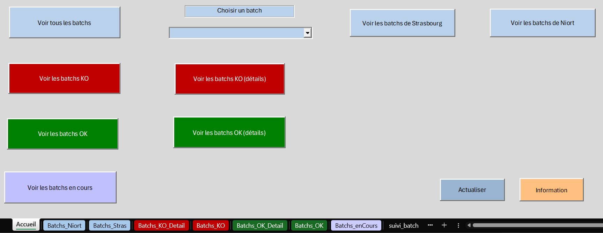

Concevoir une solution automatisée pour faciliter le débobage des batchs au quotidien et, par conséquent, fiabiliser la qualité des indicateurs présents dans nos tableaux de bord.
Actuellement, le suivi du bon déroulement des projets SAS qui s'exécute en automatique, les batchs, repose sur la boîte mail d'équipe. À la fin de chaque exécution, un mail est automatiquement envoyé :
• En cas de succès, le mail est classé dans le dossier « CR Batchs SAS SUCCÈS »
• En cas d’échec, le mail reste dans la boîte de réception en attendant d'être traité.
Cependant, nous devons vérifier que tout s'est bien déroulé sur un certain nombre de projets. Ceux-ci concernent les trois marques (MAAF, MMA et GMF) et différents domaines fonctionnels :
• Santé individuelle
• Prévoyance individuelle
• Santé et prévoyance collective
En effet, nous devons piloter un maximum de l'activité de la Direction Santé Prévoyance et nous avons de multiples sources de données. En conséquence, un volume important de batchs est exécuté quotidiennement, réparti sur deux
serveurs :
• Niort : environ 70 batchs
• Strasbourg : environ 20 batchs
Dans ce contexte, le contrôle de la qualité des chiffres produits quotidiennement est complexe.
En l’absence d’erreur technique SAS (erreur physique), certaines anomalies fonctionnelles ne sont
pas détectées automatiquement. Par exemple, une source de données non mise à jour peut
entraîner l’absence de données pour une journée complète dans nos tableaux de bord sans générer d’erreur technique.
Ces anomalies sont le plus souvent signalées a posteriori par les équipes métiers, car nous n'avons pas d'autre moyen de les repérer qu'en consultant le tableau de bord. Cependant, au vu du nombre de rapports en production, il est impossible de tous les vérifier chaque matin.
Dans ce contexte, et après avoir recueilli les besoins de chaque membre de l'équipe, j'ai choisi de construire un outil VBA pour faciliter le débogage quotidien des batchs. J'ai privilégié ce format car c'est ce qui me paraît le plus simple pour effectuer les mises à jour. De plus, pour faciliter la lecture du tableau, je pense que l'utilisation de plusieurs boutons pour créer des "filtres" est la solution la plus ergonomique.
J'ai également pensé à concevoir un tableau de bord à partir des statistiques de l'historique. Le but de ce tableau de bord est de voir les erreurs récurrentes pour essayer de trouver des solutions.
Ce projet est composé de deux grandes phases : la construction de l'outil et la conception du reporting.
• La construction de l'outil :
J'ai choisi de créer un outil VBA, mis à jour toutes les 15 minutes, qui analyse l'exécution des batchs des dernières 24 heures. Cet outil est lui-même articulé autour de 3 grandes étapes :
- Étape 1 : la construction des fichiers de paramétrage.
J'ai commencé par concevoir les fichiers de paramétrage Excel via VBA. À partir d'une feuille d'inventaire regroupant l'ensemble des informations d'un projet SAS, j'ai constitué la liste des batchs et des programmes associés. J'y ai également lié les tables utilisées en leur attribuant un rôle précis : "LIT" (lecture seule), "ALIMENTE" (lecture et insertion) ou "PRODUIT" (création de la table). Ce travail m'a permis de déterminer les liaisons entre les différents batchs.
Ensuite, à partir du fichier Excel "inventaire_tdb" — mis à jour à chaque mise en production d'un nouveau reporting — j'ai associé à chaque batch les tableaux de bord qu'il alimente. Enfin, j'ai sollicité deux collaborateurs de l'équipe, à Strasbourg et à Niort, pour établir la liste des tables devant impérativement être mises à jour quotidiennement.
- Étape 2 : le projet SAS de génération de la table qui alimente l'outil.
L’objectif de cette étape est de construire la table maîtresse alimentant l’outil VBA. Cette table consolide les informations d'exécution des batchs sur les dernières 24 heures. J'ai d'abord importé tous les fichiers de paramétrages construits précédemment. Puis pour chaque batch, via la lecture du fichier CTRLM (qui centralise le traitement d'un projet SAS : erreurs, heures de début et de fin), j'ai pu identifier le statut de chaque batch (en cours ou terminé). Si le statut est "terminé" mais qu'une erreur est détectée dans le fichier CTRLM, l'outil va alors lire la log du programme en échec pour récupérer un libellé d'erreur plus détaillé.
Ensuite, je récupère le nombre de lignes contenues dans les tables de la liste quotidienne. Le but est de signaler une source de données non à jour si son nombre de lignes est inférieur ou égal à celui de la veille.
Puis, je modifie l'état des batchs (un batch initialement "OK" passe en "KO" s'il est impacté par un batch précédent en erreur) et j'intègre les liaisons avec les tableaux de bord. Le but est d'identifier quel TDB est impacté par quel batch ce qui permet de gagner un temps précieux pour prévenir les utilisateurs qu'un reporting n'est pas à jour.
Pour terminer, j'extrais la dernière date d'exécution de chaque batch afin de ne conserver que le dernier état en cas de relances multiples et j'exporte cette table finale vers un fichier Excel.
- Étape 3 : la conception de l'outil VBA "OKKO".
Dans un premier temps, j'importe les données exportées par SAS dans la feuille "suivi_batch" de l'outil. Cette mise à jour s'effectue automatiquement à l'ouverture du fichier ou manuellement via les boutons "Voir tous les batchs" et "Actualiser". L'ensemble des autres vues sont générées dynamiquement à partir de cette copie.
Pour garantir l'intégrité des données, j'ai configuré l'outil pour que l'actualisation ne se fasse que par l'utilisation des boutons et non par la simple sélection des onglets.
Côté interface, j'ai mis en place une liste déroulante permettant de consulter les informations détaillées d'un batch spécifique. J'ai également intégré deux filtres géographiques (Strasbourg et Niort) pour répondre aux besoins des collaborateurs qui gèrent prioritairement les traitements de leur propre site.
Pour optimiser la réactivité, j'ai privilégié une vision par état : l'objectif est d'identifier instantanément les batchs en échec afin de lancer le débogage au plus vite. Une vue détaillée est disponible pour obtenir l'exhaustivité des informations, bien que la liste déroulante reste l'option la plus lisible en cas d'erreurs multiples et volumineuses. Enfin, le bouton "Voir les batchs en cours" permet de surveiller spécifiquement les traitements actifs, une fonctionnalité essentielle pour détecter les batchs qui pourraient rester bloqués en file d'attente avant leur exécution.
• La conception du tableau de bord :
Je suis qu'à la phase de construction des indicateurs en attendant que les derniers bugs soient réglés. Cependant, j'ai déjà une petite vision des indicateurs qui apparaitront dans le tableau de bord :
- Pourcentage sur l'état des batchs.
- Récurrence des erreurs : si une erreur revient trop souvent nous essaierons de trouver une solution.
- Répartition des batchs par horaire : pour voir s'il y a une corrélation entre le nombre de batchs et la fréquence des erreurs.
- Temps d'exécution moyen par batch : si un batch met trop de temps en moyenne, il faut peut-être chercher à l'optimiser.
Cette mission a été l'opportunité de mener un projet en parfaite autonomie, de la phase de recueil des besoins jusqu'au développement technique et à la mise en production. Elle m'a permis de prendre conscience de l'enjeu crucial que représente le débogage quotidien des batchs pour garantir la fiabilité et la qualité des données de l'entreprise.
Sur le plan technique, j'ai approfondi mes compétences en manipulation de fichiers textes et en programmation via les langages VBA et SAS, tout en perfectionnant la conception d'interfaces VBA grâce à l'utilisation de modules ActiveX. Ce projet a sollicité ma réflexion et ma créativité pour concevoir une solution à la fois simple et performante. J'ai accordé une importance particulière à l'ergonomie et à la praticité de l'outil, avec l'objectif central de générer un gain de temps pour mon équipe.
Cependant, j'ai dû faire face à plusieurs défis, tant techniques que logistiques :
• Difficultés techniques :
- La gestion du transfert des fichiers CTRLM et des logs d'un environnement Windows vers UNIX : les fichiers étaient rangés dans des sous-dossiers
nommés par batch et par date. La commande "copy-file" ne permet pas de sélectionner les dossiers, mais uniquement les fichiers. Il a donc fallu
une alternative pour rapatrier tous les fichiers nécessaires dans un dossier unique. Avec l'aide d'un collègue, nous avons mis en place un programme
PowerShell qui copie-colle les fichiers en les renommant (nom du batch + nom d'origine). Cela a permis de tout centraliser dans un seul répertoire,
facilitant ainsi grandement l'importation vers l'environnement UNIX.
- L'optimisation des algorithmes de recherche de texte en VBA : j'ai travaillé sur le fichier d'inventaire des paramètres. Je devais chercher des
infomations spécifiques dans les cellules contenant du code SAS. Comme il n'existe pas de règle stricte pour l'écriture d'un code SAS, il a fallu
prendre en compte de nombreux cas différents pour identifier une table. Par exemple, pour récupérer toutes les tables de la bibliothèque "ZDB" et
leur attribuer un rôle, je devais gérer toutes les syntaxes possibles permettant de créer une table (comme l'instruction DATA, le CREATE TABLE en
SQL, ou encore l'option OUT=).
• Difficultés logistiques et stratégiques :
- Le choix du support de la solution : fallait-il conserver le flux via boîte mail ou développer un outil totalement nouveau ?
- Optimisation du cycle d'exécution : pour assurer une mise à jour toutes les 15 minutes, il a fallu optimiser le programme afin que son temps
d'exécution reste inférieur à 10 minutes, garantissant ainsi la stabilité de la chaîne de traitement.